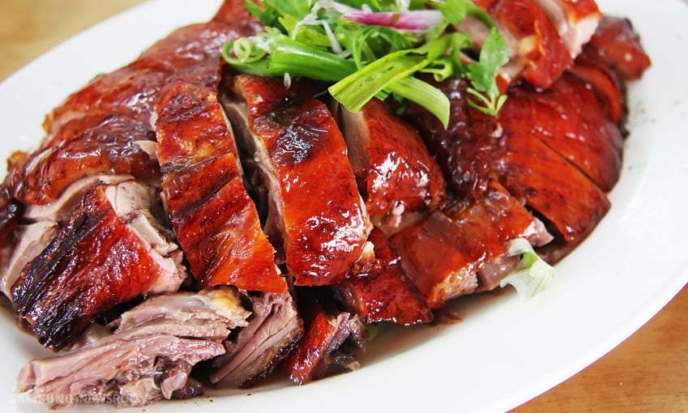
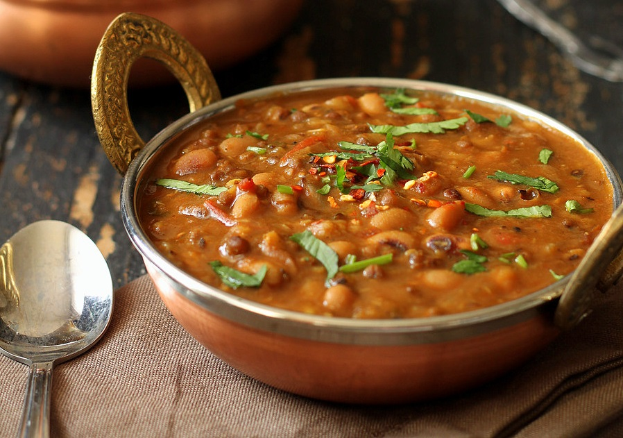
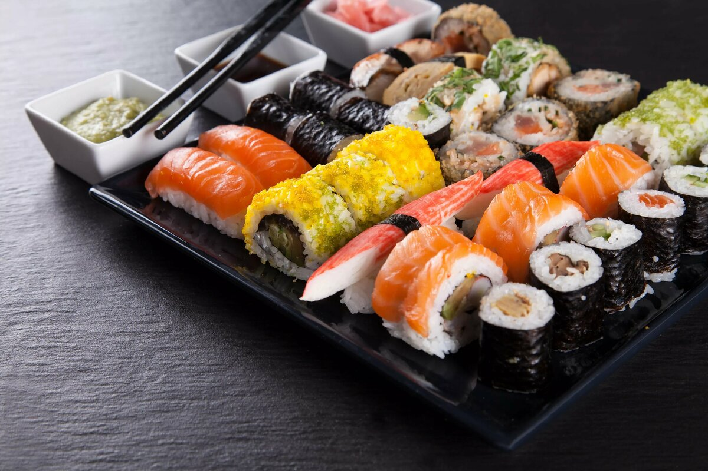

Одно из самых популярных блюд в Китае, один из символов китайской кухни, знаменитый на весь мир. Особенно ценной частью утки по-пекински является, по признанию многих, её тонкая и хрустящая кожа. Нарезанную на тонкие дольки утку обычно подают с лепёшками, сладким бобовым соусом или соей с измельчённым чесноком.
Благодаря появлению в 70-х годах фабричного замороженного слоёного теста, круассаны превратились в широко популярный фаст-фуд и теперь их могут печь все, а не только опытные повара. Круассан — наиболее распространённая выпечка, подаваемая к завтраку в континентальном стиле.
Самое популярнейшее и самое «народное» индийское блюдо. Дал — это похлебка из чечевицы или гороха (и любых других видов бобовых). В общем-то, в Индии любое блюдо из бобовых называют «Дал».
Суши - это традиционное японское блюдо, в основе которого лежит заправленный уксусом мелкозернистый рис, дополненный морепродуктами, овощами и водорслями Повар Ханая Ехэй стал подавать кусочки свежей на рисовых колобках.
Нарезанную на тонкие дольки утку обычно подают с лепёшками, сладким бобовым соусом или соей с измельчённым чесноком.
Подробнее»Круассан — наиболее распространённая выпечка, подаваемая к завтраку в континентальном стиле.
Подробнее»